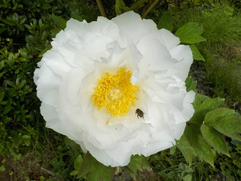
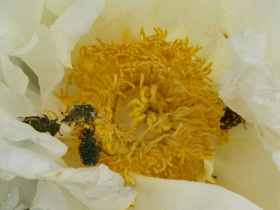
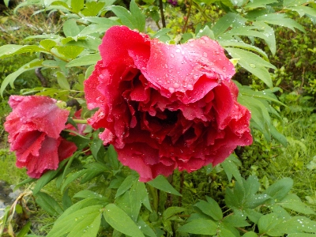
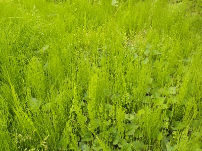
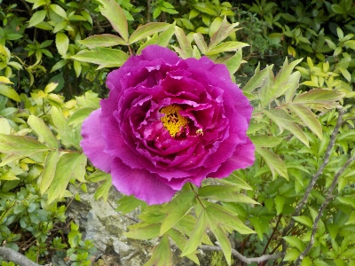
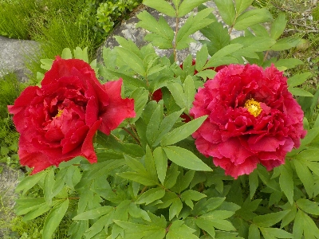
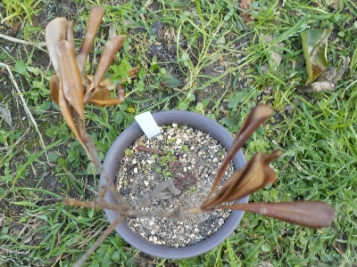

ボタンを見たら虫に先を越されました。
2024/04/27


花数が多いものに虫がいるのは全然いいんですが、花数が少ないものに虫がいるのは嫌かな。
コガネムシも害虫になるので嫌かな。
2024/04/27


花数が多いものに虫がいるのは全然いいんですが、花数が少ないものに虫がいるのは嫌かな。
コガネムシも害虫になるので嫌かな。
2024/04/21

水分を沢山受けて花がとっても重たそうです。
明日になったら傷みが出るんだろうな。
2024/04/20

スギナが勢いよく伸びています。草刈りしようと思いましたが、他にやることがあったので先延ばししました。
たぶんゴールデンウィーク中にします。未来の自分に期待します。
2024/04/20


今年も家で綺麗なボタンの花が見れて良かった。
公園とか花の施設、人の家とかでもボタンは見ますが、自宅でのんびり1人で見るのが1番好きだな。
2024/04/13

トベラは強い植物だと思っていましたが、枯らしてしまいました。
冬に植え替えしたのが悪かったかな。
過去の日記
畑仕事じゃないよ。